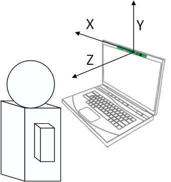
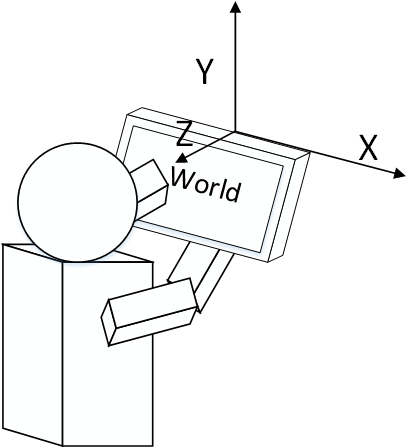
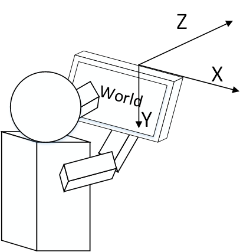

The SDK uses the following coordinate system definitions:
| • | The Image Coordinate System: |
The coordinates refer to the pixel location (x,y) in the color or depth pictures, where x is in the range of 0 to w-1, (w is the image width), and y is in the range of 0 to h-1, (h is the image height). From the camera point of view, the origin (0,0) is at the top left; the X axis points to the right; and the Y axis points down.
| • | The Camera Coordinate System: |
The coordinates are 3D coordinates (x,y,z). The origin (0,0,0) is at the center of the depth camera.
For front facing cameras, the default camera coordinate system is defined (see Figure 11) as the X axis pointing to the right (camera view), the Y axis up and the Z axis towards the user. This is also referred to as the left handed system. The camera coordinate system definition does not change with the camera mirror mode. The camera coordinates values are in meters, if not explicitly specified.

Figure 11: Camera Coordinate System: User Facing
For rear facing cameras, the default camera coordinate system is defined (see Figure 12) as the X axis pointing to the right, the Y axis up and the Z axis towards the user. This is also referred to as the right handed system. The camera coordinate system definition does not change with the camera mirror mode. The camera coordinates values are in meters, if not explicitly specified.

Figure 12: Camera Coordinate System: World Facing
To facilitate working with OpenCV* algorithms, the SDK defines an alternative camera coordinate system to match the OpenCV definition for rear facing cameras. The camera coordinate system is defined (see Figure 13) as the X axis pointing to the right, the Y axis down and the Z axis towards the scene. Use the SetCoordinateSystem function to change the coordinate system setting.
 To change the coordinate system, you must call the SetCoordinateSystem function before any camera device or the algorithm instance is created. In the case of using the PXC[M]SenseManager interface, set the coordinate system right after creating the PXC[M]SenseManager instance and before any EnableXXX functions. The behavior is undefined if you change the coordinate system setting after the capture or algorithm instances are created or in the middle of streaming.
To change the coordinate system, you must call the SetCoordinateSystem function before any camera device or the algorithm instance is created. In the case of using the PXC[M]SenseManager interface, set the coordinate system right after creating the PXC[M]SenseManager instance and before any EnableXXX functions. The behavior is undefined if you change the coordinate system setting after the capture or algorithm instances are created or in the middle of streaming.

Figure 13: Camera Coordinate System: World Facing Alternative